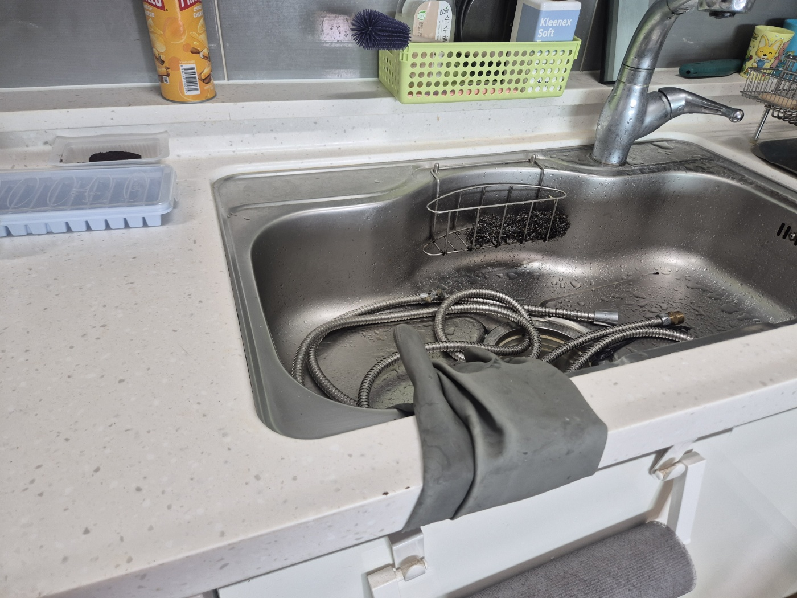
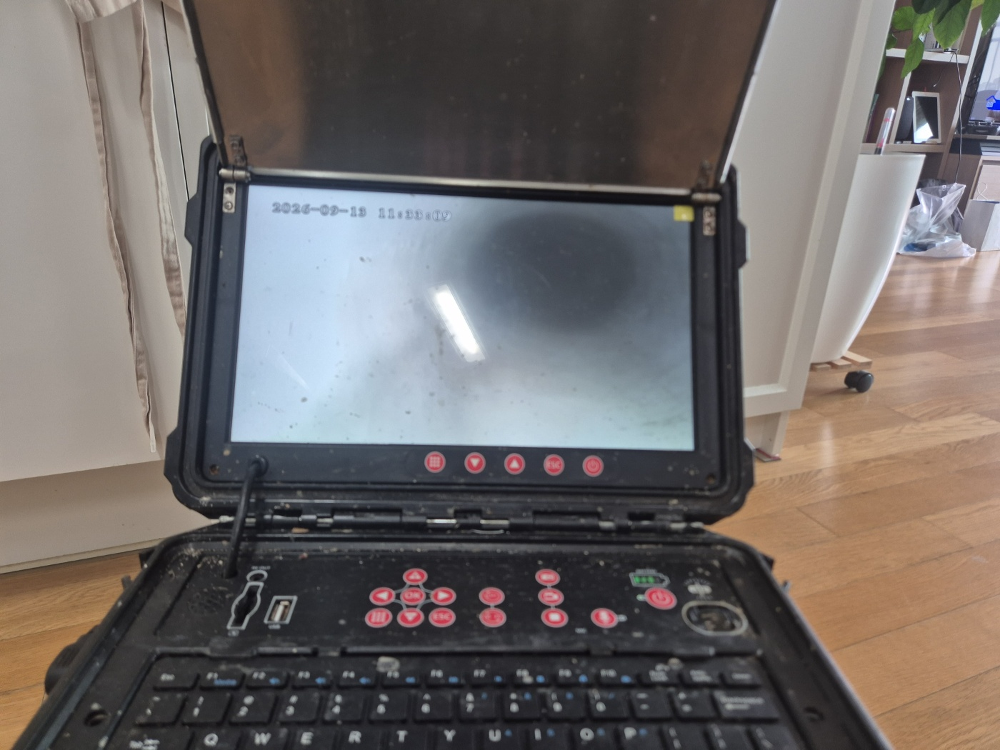
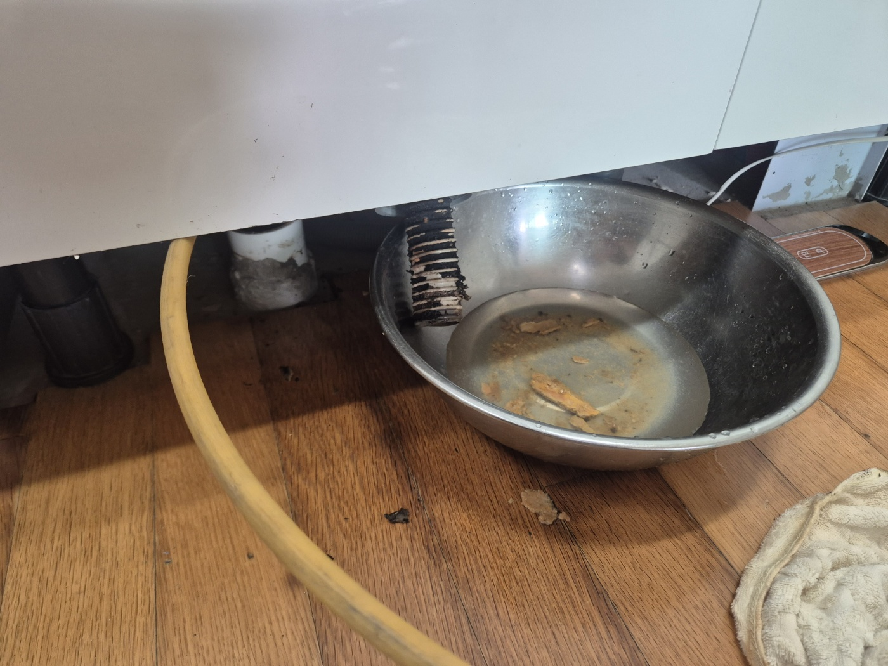
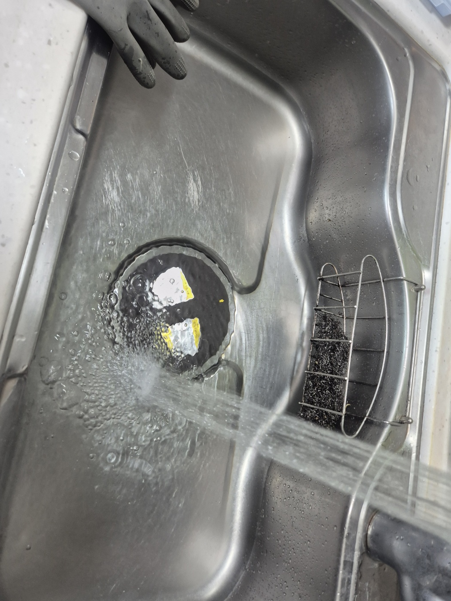
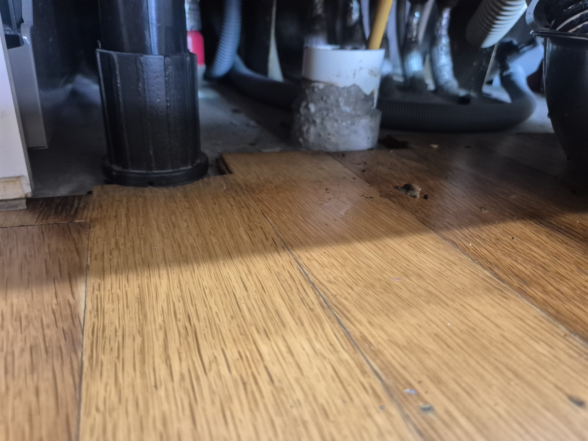

안녕하세요.. 고고고 설비입니다.. 오늘은 안성시 공도읍에 있는 아파트에서 싱크대막힘, 역류 신고를 받고 다녀온 현장입니다. 설거지물이 올라올 정도로 역류한다고 하셨고, 며칠째 조금씩 심해지다가 오늘 아예 못 쓸 정도가 됐다고 하셨어요.
싱크대 배수구에 전동 와이어 호스를 넣기 전에, 먼저 하부장 안쪽 배관 상태부터 확인했습니다. 역류가 심했던 만큼 어디서부터 막혔는지 정확히 짚어야 했어요. 고무장갑을 끼고 배수구 안쪽까지 손을 넣어보니 끈적한 느낌이 바로 전해졌습니다.
하부장 아래 바닥까지 낮은 자세로 들여다보며 배관 지지대 주변 상태를 확인했습니다. 오래된 배관이라 주변에 시멘트로 보강된 흔적도 보였고, 바닥 틈 사이로 호스와 배관들이 복잡하게 얽혀있어서 작업 공간을 확보하는 것부터 쉽지 않았어요.

배수구에 전동 와이어를 밀어 넣고 반복해서 작업하며 막힌 부분을 뚫어나갔습니다. 한 번에 시원하게 뚫리지 않아서 케이블을 여러 차례 넣었다 빼기를 반복해야 했어요. 바닥에 대야를 받쳐두고 안쪽에서 밀려 나오는 이물질을 함께 확인했습니다.

작업 중간중간 내시경 카메라로 배관 안쪽 상태를 확인하면서 남은 이물질이 없는지 꼼꼼히 체크했습니다. 화면으로 보니 처음엔 뿌옇게 흐려 보이던 부분이 작업을 반복할수록 조금씩 선명해지는 게 보였어요.

작업을 마치고 거름망을 정리한 뒤 물을 세게 내려서 역류 없이 잘 빠지는 걸 최종 확인했습니다. 역류했던 자리까지 깨끗이 닦아드리고 작업을 마무리했어요.

싱크대 배관은 기름때와 음식물 찌꺼기가 조금씩 쌓이다가 어느 순간 한꺼번에 역류하는 경우가 많습니다. 설거지 후 뜨거운 물을 한 번씩 흘려보내시고, 배수 속도가 느려지는 초기 신호가 있을 때 미리 점검받으시는 걸 권해드립니다. 특히 아파트는 세대마다 쓰는 배관이 이어져 있는 경우가 많아서, 혼자만 조심해도 옆 세대 상황에 따라 다시 역류할 수 있다는 점도 참고하시면 좋습니다.
고고고 설비는 주택, 아파트, 원룸, 상가, 공장의 생활 하수 오수 배관을 관리해 주는 업체입니다. 고고고 설비에 전화 주시면 친절상담 정확한 진단 확실한 해결로 보답해 드리겠습니다!!